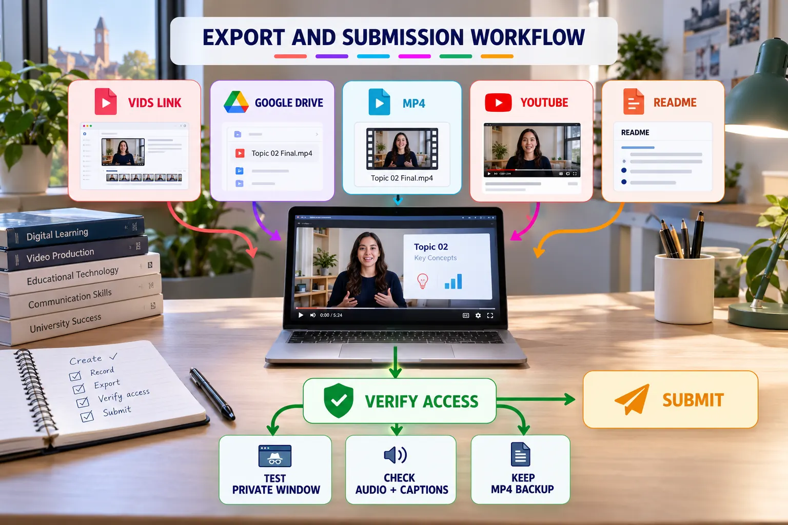

Export, Sharing and Submission
Prepare a reliable viewing link, portable backup and documented submission path.

Output options
| Output | Use | Check |
|---|---|---|
| Vids link | Collaborative viewing and comments | Viewer permission |
| Google Drive MP4 | Stable playback and backup | File access |
| Downloaded MP4 | Portable archive or LMS upload | Complete export |
| YouTube | Portfolio or broader sharing | Channel and visibility |
| README link | Connect video with project evidence | Correct URL and label |
Submission procedure
Export the final version
Wait for processing to complete and retain an MP4 backup.
Set the correct permission
Use Viewer access unless collaborative editing is explicitly required.
Test in a private browser
Open the exact submitted URL without relying on your signed-in session.
Play from beginning to end
Check audio, captions, timing, links and the final frame.
Document the video
Add a descriptive link to README and include any required AI disclosure.
README evidence block
## Project Video [Watch the 90-second project walkthrough](PASTE-VERIFIED-VIDEO-URL) - Duration: 60–90 seconds - Captions: Reviewed - Access: Tested in a private browser - AI assistance: [Describe use or write "None"]
Ready-to-submit evidence
- Verified viewing URL.
- Reviewed captions or transcript.
- MP4 backup.
- README video link.
- Appropriate sharing permission.